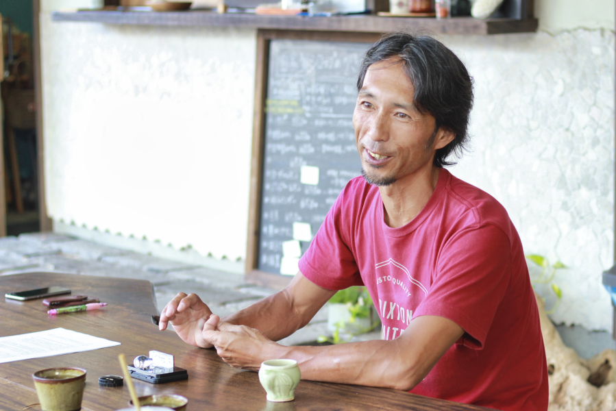

移住というとまず仕事ありき、というのが常識という感があるが、そのような既成の概念が当てはまらない人もいる。
まず趣味ありきで移住を決めている人だ。印象深かったのは、サーフィンの合間で仕事。つまり常識での優先順位がが逆。
本来であればまず仕事が先にきて、その後に余暇を過ごす時間を見出すことが一般的である。
このように趣味を主に、そして仕事がその後についてくるという生活でもとても充実した幸せな人生を送っている人もいる。
ただこのように楽園での生活を満喫しているようなライフスタイルは、誰でも可能なのだろうか？
前述のように一般的に、まず仕事ありきが移住生活の基本ではあるが、このインタビューを通して、逆転の発想で、もっと自由なライフスタイルも今後増えてきてもいいのではなかろうかとさえ思えてきたのは自分だけだろうか。
今回はそんな生活を実際に送っている方から移住に至った経緯、また現在移住を考えている人たちへのアドバイスなどを聞いてきた。
文・取材/谷口
写真・取材/岡川
金森 裕司(かなもり ゆうじ)
[RELATION 代表]
21歳という若さで岐阜県から田原市に移住。その後、奥様と共同でRELATIONを設立。SUP(スタンドアップパドル)のツアーやYOGA教室の開催したり、夏には季節限定CAFE「tsunagu cafe」をオープン。地元のアーティストをサポートした個展の開催・革製品を扱ったクラフト工房・サーフボードの修理/販売など様々な事業で地元の人たちを「つなぐ」活動を展開している。
何の迷いもなく、考えてすぐ移住しました
－－本日はよろしくお願いします。お生まれはどちらですか？
金森 裕司（以下、金森）：大垣です。
－－奥様も同郷でしょうか？
金森：同じ岐阜県ですけど、隣の関ヶ原です
－－移住については何歳くらいから考え始めましたか？またそのきっかけは？
金森：そうですね、21ぐらいから考えてすぐ行動に移しました。なんの迷いもなく。
－－東海地方の人たちはご自分の生まれた町からなかなか離れようとしないと言われますが、何が背中を押したのでしょうか？
金森：そうみたいですね。ただ僕の場合は18ぐらいから伊良湖にサーフィンに来るようになって、いつもここに来て日帰りしてましたから、移住といっても遠いところに行くという感覚はなかったですね。同じ東海地方なんで。
何年間も通って慣れ親しんでいるところで、いつでも帰れるという安心感がありましたね。
サーフィンや移住だけを考えれば、ここよりもっとあったかい宮崎とかも考えたんでしょうけど、選択肢としてはそれはなかったですね。やっぱり言われるように、この地域から外に出るのが嫌なのかもしれないですね。
－－もしご出身が東海地方以外だった場合でも伊良湖に移住しましたか？
金森：僕が移住してきた二十数年前はまだこの辺はもっと家も少なくて、この辺にはちょっと住めないなあ、と思うくらい田舎だったので、最初は田原市内の小さなアパートに住んでいました。で、10年ぐらい前にようやく海沿いの家(現在の自宅)が見つかったので、引っ越してきたんですよ。それまでコンビニ1軒しかないような街でしたもんね。
その前から移住している人たちが、シバケンさん、パンダさん、ジャンジャン亭やってたジョージさん、あと、チェストって今なくなっていますけど、そこにいた平井くんですね。
－－移住と言葉で言うのは簡単ですが、仕事や日常生活への心配はなかったですか？
金森：そんなことはあんまり考えてなかったですね。なんだかんだちょこっとお金がありましたから、それを使いつつ、心細くなってきたらちょこっとアルバイトという生活でしたね。移住するまでは実家にいて家賃も食費も要らなかったので、結構ゆとりがありましたね。20代の頃はオンシーズンは波乗り中心でバイトしつつ蓄えたお金で冬はバリでサーフィン、という生活の繰り返しでしたね。で、30手前で結婚して子供ができてからはそんな生活ができなくなりましたね。
－－仕事に関して何か目標や目的はありましたか
金森：兎にも角にも若かったので何も考えていなかったですね。要は怖さ知らずだったんですね、今考えると（笑）
－－なるほど、強い決心が必要だったと思いますが、故郷に対して未練はありませんでしたか？
金森：そうですね、大垣にいるときに母親に「あんたふらふらしとらんと何かせんと」と言われて、それだったら伊良湖に移住して自分の好きなことをやろう、と思ったんですよ。決心とか未練とかは全然なかったですね。ただ今思うとそれが引き金かもしれませんね、移住の。
来た当初は田原に長屋の安いアパートがあって、そこに友達と住んでいたんです。その建物の奥に今のチャーミーリペアの前身のリペア工場を先輩が作ってくれてそこでボードのリペアをしていたんですが、それが仕事といえば仕事でしたね。
－－親御さんやご親戚の方、友達からの反応は、反対意見とかは？
金森：全然なかったですね。逆に「地元でクルマやバイク乗ってふらふらしてると近所中に嫌らしいから、伊良湖に行きたいのならそうしやぁ」って言ってくれましたからここに来た、っていうこともありますね。次男なんで気楽なんですよ、実は。
因みに伊良湖の移住組は次男坊がほとんどなんです。
－－次男坊がほとんど⁉︎それははじめて知りました(笑)
やはり伊良湖に移住されたかった理由は・・？
金森：やっぱり海です。とにかくその頃はサーフィンが上手くなりたいという一心だったので、伊良湖への移住は必然でしたね。
プロとかを目指すわけではなかったんですけど、ただただ上手くなりたかったですね。
僕は余った時間で仕事をするというタイプですから
－－岐阜県は海に面していません、そこからすると伊良湖のロケーションというのはやはり違いますか？
金森：そうですね、パラダイスって感じです。元々サーフィンと出会うまでは海というと海水浴ぐらいしか思いつかなかったので。
－－最初から完全な移住ではなく、例えば週末だけ民泊したりどこかの空き家を借り上げ泊まるという、移住への助走というかとりあえず伊良湖の日常を体感してみてそれから検討するという選択肢はなかったんでしょうか。
金森：完全に移住するその前に、車中泊しながらふらふらしてたもんですから、そんな考えはなかったですね。ハイエースの後ろにベッド作って生活用品一式乗せてあっちこっち行ってました。
－－誰にも促されるのではなくご自分の意思で移住されたわけですよね。
金森：もちろんです。移住していなかったら、田舎で今頃何していたかわかりませんね。良かったです伊良湖にきて。
－－これからここに移住を考えている人たちにアドバイスをお願いします。
金森：今の人たちは昔の僕と考え方が違いすぎてて、世代や時代が違うからかもしれませんが、今移住してきている30代の人たちの考えはまず仕事なんですよね。
まず仕事を決めてから移住してくるっていう感じなんで、僕とはアプローチの仕方が全く違うんです。僕の場合はまずサーフィンありき、でしたから。
ただ今の人たちの考え方で普通なんですけど。おそらくそれは性格の違いとかもありますよね。
今の人たちは余った時間でサーフィンするわけですけど、僕は逆で余った時間で仕事をするというタイプですから(笑)

ここにいると退社後、みんな海に集まりだします。
幸せを感じる時間ですね
－－今では田原だけに限らず、各地方自治体にとって人口減という深刻な問題を抱えていて、その課題解決のための手段として移住者を募っていますね。
金森：確かにそうですね。サーフタウン構想とかを打ち出して募っているようですね。構想を実行したらある程度の移住希望者は期待できるかもしれませんが、大々的にドバッとということはないような気がします。現実は構想どおり動いたとしても潤うのは構想の中にある地域の通り沿いの商売屋さんだけで、田原市の大多数を占める農家さんにとってはなんのメリットもないわけですからそこはどうなんでしょうね。
－－田原市役所でも一般から公募して移住サポーターの人たちが当地方の魅力や情報などを都市部の人たちに伝えたり、希望者にアドバイスをしたりしています。
金森：そうなんですか。そういえば東京23区内からの移住者には田原市役所から50万円ぐらいの補助金が出るような話を聞いたんですが、やっぱり役所も移住者のターゲットを東京に絞ってるんでしょうね。
－－田原市人口が現在の60,000人から10年後には4,000人減の56,000人まで落ち込むと言う試算が某NPOのデータがあります。
金森：かなり深刻な話ですよね。田原市はこの先5年、10年、20年と今の60,000人の人口を死守しようとしていると言う話を聞いていますが、この数字を見ると絶対無理ですよね。だから先程のサーフタウン構想とやらで少しでも移住者を増やそうとしているんでしょうね。
移住移住と言ってもここで一生の仕事に出会えるかどうかが問題ですよね。田原工場で3交代っていう選択肢もありますけど、それも30歳を超えてまでその仕事に就けるかどうか疑問ですし、居酒屋でバイトしながら生活とサーフィンを両立させようとしていた僕の同級生も、「これではいかんから俺地元に帰るわ」ということで戻ってしまったりしていますからね。
－－金森さんが移住検討者にプレゼンするのであれば、なにをPRしますか？
金森：やっぱりここにいれば、8時〜5時のサラリーマンしていてもこの時期なら、出退社前後に海に入れますから、例えば帰宅後6時ぐらいから1ラウンド海に入れば、疲れていてもメンタルストレスも発散できますし、リフレッシュもできます。
僕はそのようなことを体験できる人生に価値を感じますね。実際仕事が終了した5時半ぐらいから地元の子たちが集まり出して、みんなで海に入るんですよ。その瞬間がここにいて幸せを感じる時間ですね。
－－素敵ですね！都会の中では絶対体験できない時間ですね！？
RELATIONの事業でもされているSUP(スタンドアップパドル)についてもお話伺いたいです。いつ頃から始められたんですか？
金森：始めたのは2008年ごろで、まだこのエリアではやっている人はほぼ居ない状況で知り合いのメーカーさんに問い合わせて、手に入れて始めました。
スクールは2013年からやってます。
スクールのポイントはここ伊良湖ではなく、基本的に波の無い内海(三河湾)です。
当然、個人的にはここでもやりますけど。
－－1シーズンで何人ぐら受講されるんですか？また申込者は名古屋や岐阜の方もいるんでしょうか
金森：年間でイベントも合わせて、100名前後の方に体験して頂いてます。
最近はあまり営業努力をしてないので少ないですが…。募集しないといけないですね。
県外の方もちらほらいますが、やっぱり田原や豊橋、三河地域の方が多いですね。
どうもサーフィンより敷居が低いようで50、60代の人も結構いるんですよ。
もっとプロモーションをかけて、東京を含む都市部から来てもらうようにして同時に移住を勧め、先程のお話のように移住してきてお世話になっている田原市に恩返ししないといけないですね。
－－我々mazStayとしても金森さんを応援していきます。頑張っていきましょう！
金森：そうですね、頑張っていきましょう！
－－本日は有難うございました！
金森：こちらこそ、ありがとうございました！
Sutand Up Paddle Boarding
IRAGO/SUPスクール
https://www.relation-irago.com/supレクチャー-クルーズ/
期間：GW(ゴールデンウィーク)〜10月末
愛知県田原市若見町松渕64-4
金森さんが営むSUP(スタンドアップパドル)のレッスン＆クルーズ。予約時に時間も設定でき、日が沈む時のSUPクルージングは非現実世界のような感覚に。心と身体を整えたりまた大切な人との特別な思い出作りにも。

ふるさと納税寄付返礼品としても掲載中！！
ふるさと納税サイト「さとふる」はこちら画像をタップして頂き、サイトTOPより、「田原市 SUP」で検索すれば出てきます。
この制度を利用して、田原市にご寄付いただくと返礼の品としてSUP体験をしていただけます！